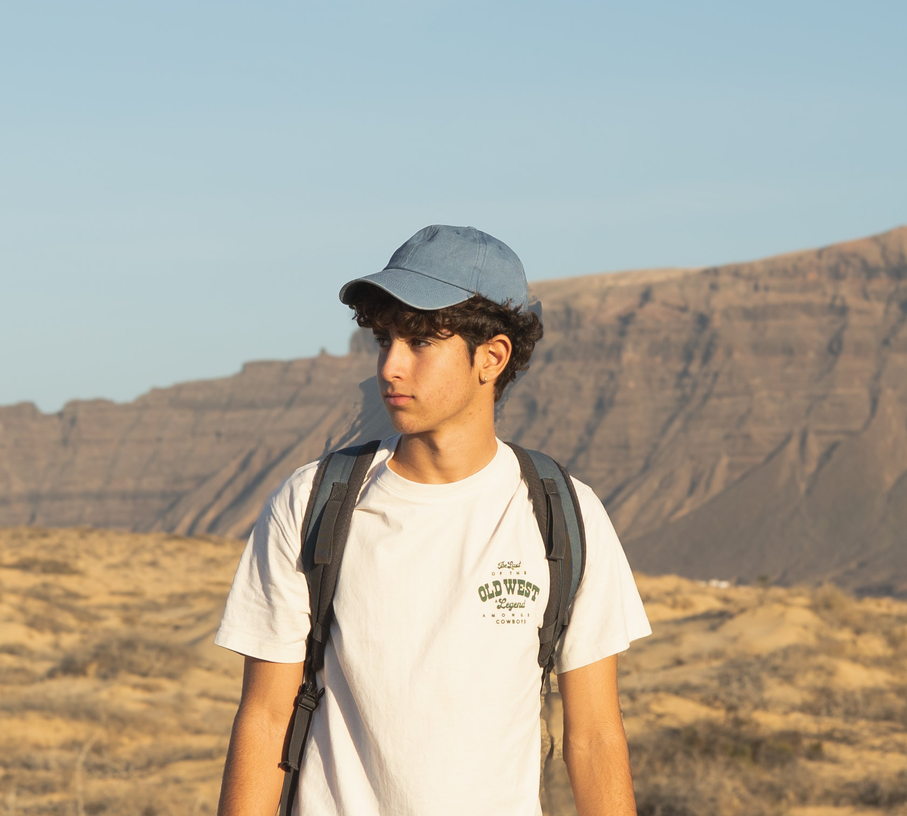

I was born and raised in Lanzarote, a place where the Atlantic is impossible to ignore. While the island's raw nature and the constant presence of the sea have undeniably shaped my creative eye, my passion for visual storytelling goes beyond the landscape.
For me, photography and filmmaking are about keeping memories alive. I see every frame as a way to freeze time, capturing moments that would otherwise fade away. It’s my way of documenting life—not just as it looks, but as it feels—ensuring that those experiences remain vivid forever.
Being at the beginning of my professional journey, I bring a fresh perspective and a massive amount of enthusiasm to every project. I don't believe in small assignments; I believe in great stories. I am fully committed to learning, evolving, and pushing the boundaries of what I can create.
I am ready to dive into any challenge, from commercial work to personal narratives, bringing a mix of technical curiosity and genuine energy. If you have an idea, I’m ready to help you capture it.
Creative Filmmaking • Digital Photography • Visual Archiving • Video Editing • Full Project Dedication • Fresh Creative Perspective
READY FOR ASSIGNMENTS • WORLDWIDE